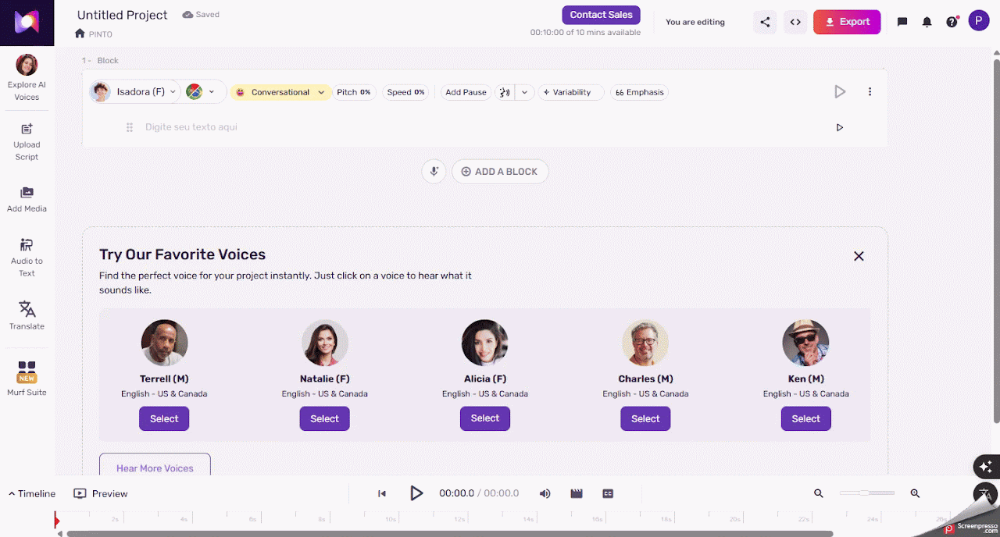
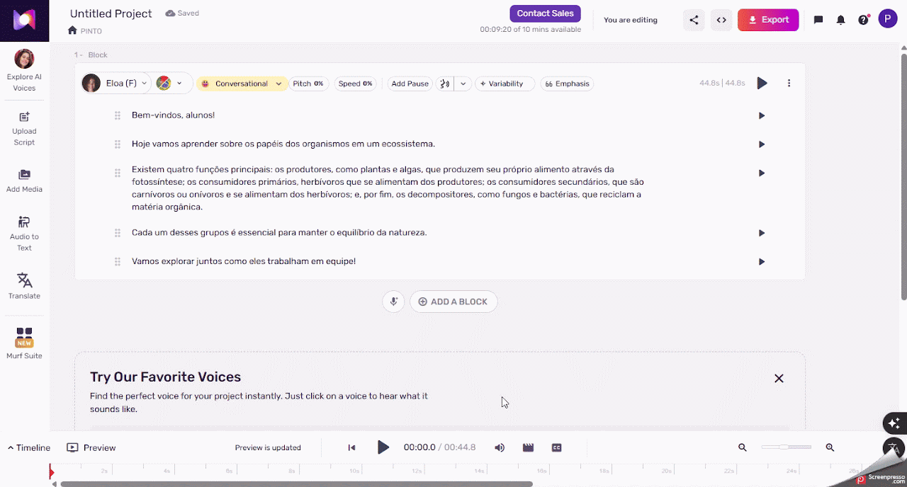

Murf.ai
Criar narração para alunos com dificuldade de leitura.
Ficha técnica
Visão geral
O que é o Murf.ai?
O Murf.ai é uma plataforma de inteligência artificial que converte texto em locuções realistas. Com uma ampla biblioteca de vozes em diversos idiomas e estilos, permite criar narrações para vídeos, apresentações, podcasts e muito mais, sem a necessidade de equipamentos de gravação ou estúdios profissionais.
Fluxo de uso
Como utilizar o Murf.ai
Etapa 1
Cadastro
- Acesse o site oficial: https://murf.ai.
- Clique em "Sign Up": Localizado no canto superior direito da página inicial.
- Escolha o método de cadastro.
- Utilize uma conta do Google, Microsoft ou Slack para um registro rápido.
- Ou insira um e-mail válido e crie uma senha.
- Confirme seu e-mail: Verifique sua caixa de entrada e clique no link de confirmação enviado pelo Murf.ai.

Etapa 2
Criando um Novo Projeto
- Acesse o Murf Studio: Após o login, clique em "Open Studio" para acessar o ambiente de criação.
- Crie um novo projeto: Clique em "Create Project", insira um nome para o projeto e selecione o tipo (por exemplo, "Voice Over").
- Adicione seu script:
- Digite ou cole o texto diretamente no editor.
- Ou faça o upload de um arquivo de texto nos formatos suportados (como TXT, DOCX ou SRT).
Etapa 3
Selecionando e Personalizando a Voz
- Escolha uma voz:
- Navegue pela biblioteca de vozes, filtrando por idioma, gênero, sotaque e estilo.
- Ouça prévias para encontrar a voz que melhor se adapta ao seu projeto.
- Personalize a locução:
- Ajuste parâmetros como velocidade, entonação, ênfase e pausas.
- Utilize ferramentas de pronúncia para palavras específicas, se necessário.
- Adicione efeitos sonoros ou música de fundo diretamente na plataforma.

Etapa 4
Revisando e Editando
- Pré-visualize a locução: Clique em "Play" para ouvir a narração gerada.
- Faça ajustes:
- Edite o texto conforme necessário.
- Altere configurações de voz ou substitua por outra, se desejar.
- Adicione ou remova efeitos sonoros e músicas de fundo.
Etapa 5
Exportando o Áudio Final
- Gere o áudio: Clique em "Build Audio" para que o Murf.ai processe a locução final.
- Baixe o arquivo:
- Após a geração, clique em "Download" e escolha o formato desejado (MP3 ou WAV).
- O arquivo será salvo em seu dispositivo, pronto para ser utilizado em seus projetos.

Apoio ao uso
Dicas adicionais
Planos Disponíveis:
- Gratuito: Permite testar a plataforma com funcionalidades limitadas e marca d'água nas locuções.
- Creator: Oferece mais opções de vozes e exportações sem marca d'água.
- Business: Inclui recursos avançados, como colaboração em equipe e maior tempo de geração de voz.
Idiomas Suportados: O Murf.ai oferece vozes em mais de 20 idiomas, incluindo português do Brasil e de Portugal.
Integrações: A plataforma pode ser integrada a ferramentas como Canva, Google Slides e PowerPoint, facilitando a adição de locuções a apresentações e designs.